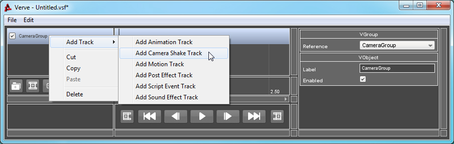
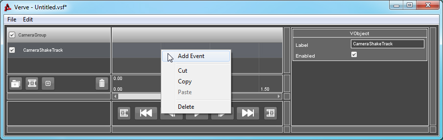
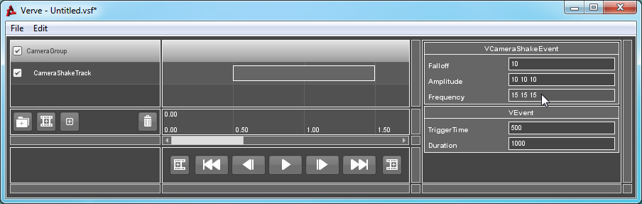

Tutorial : Camera Shake
Objects: VCameraShakeTrack, VCameraShakeEvent
The Camera Shake Track must be added to a Camera Group and will only be used while the parent Group is the Active Camera Group. The Active Camera Group is set by using a Director Group and Track, for more information on their use click here.
A Camera Shake Event will start shaking the camera upon triggering. The strength of the Event is defined by the "Falloff", "Frequency" and "Amplitude" properties. The duration of the shake is given by the duration of the Event. If the parent camera ceases to be the sequences Active Camera Group, then the shake Event will stop playing.
How to Use:
To use a Camera Shake Event, you must first add a VCameraShakeTrack to your sequence's Director Group. If you are unsure of how to create or validate a Group, click here.
Right-Click on the Group, go to "Add Track" and select "Add Camera Shake Track".

Right-Click on the Track and select "Add Event".

Select the newly created Event. The Property List window will refresh and inspect the Event. Change any of the properties here to alter the strength, direction and duration of the Camera Shake event.
